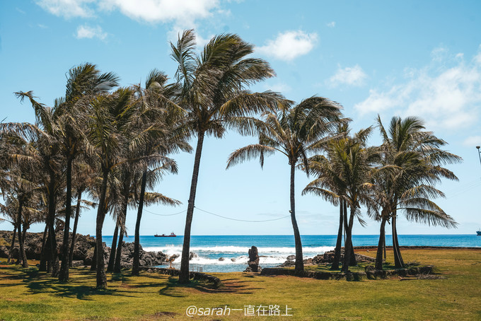
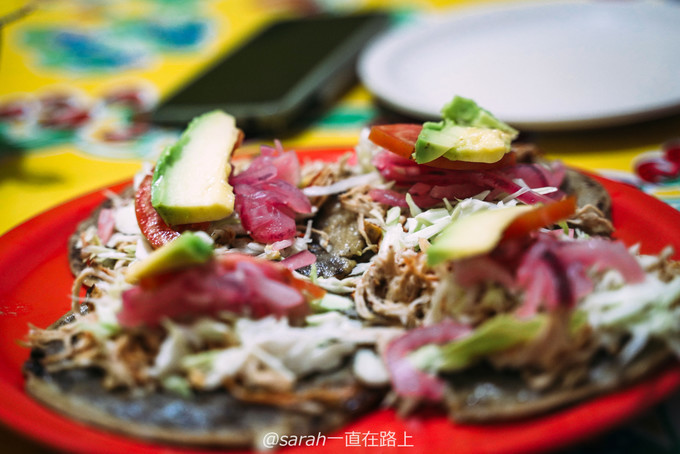

sarah一直在路上 (上海) LV.45
+关注
2019-12-22 16:28 5.1w/315
1004收藏
35分享
1004收藏
35分享
Remember the moments，not time.
旅行十年，在我最好的年华，一直在路上。
我想，值得被纪念的不是时间，而是每一个触及内心的瞬间。
我想要的旅行，并不是走过多少国家，而是去感受，去探索，去经历。
以我的全身心，与自然和人相遇，感受大自然的馈赠，探索自己的极限。
实现曾经的那些触不可及与心心念念，经历一个人的孤独和一群人的狂欢。。。
南美，是我从小的一个梦，多年来的期盼，终于实现了！这次间隔月旅行，我从北美 加拿大 到中美洲 墨西哥 过亡灵节， 坎昆 潜水，最后来到 智利 ！折腾了几千公里，飞行了13次，第一次踏上南美的土地，激动不已。
神秘的 复活节岛 ，圆了我童年遥不可及的梦！从小我就对未知神秘的地方很好奇，尤其喜欢 埃及 墨西哥 秘鲁 印度 这些神秘的国度，长大后的我，正在一步步实现最初的梦想。
至今也无人知晓， 复活节岛 这些神秘巨石建造的缘由，千百年来，大棕榈树灭绝了，拉帕努伊人也忘记了自己的文字，只留下这些摩艾石无声注视着险峻的太平洋。。。
来到 复活节岛 ，还体验了特别的项目，潜水！潜入深海，去看水下的摩艾石，这里水温只有20度，刚下水时冻得瑟瑟发抖，比洞潜还冷， 复活节岛 水下的珊瑚也与 东南亚 海域完全不同，冷冽清澈的水底还看到了海龟~
“山野如果消失，我们也终将灭亡。”
巴塔哥尼亚 ，世界的尽头，最后的狂野之地。 巴塔哥尼亚 再往南就是南极了，这里是徒步圣地，也是 智利 我最想来的地方。曾经看过的《通往 巴塔哥尼亚 的快车》，如今，山就在眼前。
百内的格雷冰川，这里更荒芜，却是野生动物的乐园，沿途还看到狐狸，美洲鸵，第一次在野外看到了啄木鸟～

智利 有三大支柱产业，红酒，车厘子，三文鱼。来 智利 当然要实现车厘子自由啦！坐直升飞机前往种植园，亲自采摘车厘子，新鲜的车厘子太太太好吃了！
世界最神秘的岛屿，复活节岛
复活节岛 ，世界上最神秘的岛屿，也是世界有人居住最与世隔绝的岛，这里被称为世界的肚脐。岛上谜团重重，遍布全岛的巨石人像，至今未可知其缘由，留下无人能解的象形文字。千百年来，只留下这些摩艾石无声注视着险峻的太平洋。
在这里，时间仿佛停止，我想每个来 复活节岛 的人都会有这种感觉，不自觉地放慢脚步，静静地看着这些神秘的摩艾石，等一场日出，守一场日落，放空自己。

复活节岛 是 智利 最为世人知晓的景点。虽说属于 智利 ，但离 智利 大陆本土还有3600公里，从首都 圣地亚哥 坐飞机，竟然还要五个半小时，极其遥远，也极其昂贵，往返在1000美金左右，航班还特别少，一遇到天气不好就容易停飞，被困岛上。
出发之前，我很纠结要不要去 复活节岛 ，这一路也没提前定死行程，为了可以说走就走，方便临时改变行程。纠结在于一是不清楚当时的天气，二是机票确实很贵，花了一万元只为看这些石头到底值不值。边查资料边看看其他的选择，但不由自主地都在查 复活节岛 信息，那就遵从内心选择，去 复活节岛 吧！
看了很多纪录片和查了许资料，这里简单和大家聊一聊 复活节岛 的历史。
四百年前，太平洋上一座偏远的岛屿上，孤立无援的岛民正经历一场浩劫。在陷入混乱之前，这里本来是天堂，如同现在的 东南亚 小岛，物产丰富，到处是大棕榈树和 托罗 密罗树，岛上的文明也发展了近一千年，到底发生了什么天灾人祸，让这个乐园小岛变得如此荒芜，文明陨落。
第一批来 复活节岛 居住的人是波利尼西亚人，这是人类历史上最擅长航海的民族，也是最强壮的民族之一，他们在 哥伦布 发现新大陆之前，便已殖民南太平洋，从 台湾 到 菲律宾 ，一路向东，来到 复活节岛 。繁衍几个世纪，发展成了几大家族，鼎盛时这里有两万人居住，他们靠出海捕鱼为生，吃的不是普通的小鱼，而是金枪鱼和海豚。海豚在深海之中，所以拉帕努伊人必须建造大型船只才能出海，而岛上此时还有大量的大棕榈树。
由于砍伐泛滥，生态严重破坏，到了15世纪绝大部分树木已经灭绝，人们无法出海捕鱼，食物来源越来越少，最终竟演变到人吃人的地步。岛上还发现了很多避难的洞穴，有明显的逃生 通道 ，这里的居民曾经四处逃串，岛上有近千座巨石人像，被称为摩艾石，突然有一天，所有的雕刻停止了，留下了很多未完成的摩艾石。
原本的天堂变成地狱，战争爆发。
战乱后的 复活节岛 上的人口只剩下2000人左右，拉帕努伊人开始互相推倒属于敌人的石像，等西方传教士发现此岛时，发现所有的石像都已经被推倒。西方人的到来，并未挽救 复活节岛 ，反而带来了毁灭性的灾难，殖民者开始到抓拉帕努伊人当奴隶，男性几乎被一网打尽。在国际舆论压力下，放回了存活的拉帕努伊人，好不容易可以回家了，在回家路上又染上天花，最终， 复活节岛 难逃瘟疫肆虐。
第二年， 法国 传教士踏上 复活节岛 ，带了更大的毁灭，彻底消灭了岛上的文化，把拉帕努伊人改造成了基督徒，下令烧毁所有刻有朗格朗格的木板，导致了文明失落，如今无人能破解这些文字，也没有多少人会拉帕努伊语了。
复活节岛 的历史是一个悲剧，如今的地球并未吸取教训，历史在重演，肆意罔纵，悲剧已然能见，最终，人类会自取灭亡。
如今的 复活节岛 似乎恢复生机，游人如织，岛上重视自然保护，垃圾分类，尽可能少使用塑料，居住区似乎和其他旅游小岛一样，设施齐全，但不远处的森林已然光秃，土地贫瘠，想要恢复生态，需要百年
复活节岛 在地图上的位置，很难想象曾经的人得花费多少时间，经历多少艰险漂洋过海来到这里。
在采石场参观时遇见了当地骑马的小男孩，这里附近还有个马场，看看他们，不像南美人，真的更像 亚洲 人呢。也已证实了拉帕努伊人是波利尼西亚人的后代。
另一处著名的摩艾是，就是Ahu Tongariki，从采石场远远眺望，还能看到一排竖立在太平洋边的摩艾石。阿胡 汤加 里基，这里的地名读起来都怪怪的，名字虽然怪，但这是 复活节岛 最著名的景点之一。这里也是看日出最佳的位置，可惜这几天天气都不是好，到了晚上开始下雨，没有看到日出也是有点遗憾。
十五个摩艾石一字排开，这是 复活节岛 上最大的石像群。摩艾背对太平洋，凝望着天空，像是在致敬。
摩艾石的身后，是一望无际的太平洋，左侧的岛是这里三大火山之一的波伊克火山，陡峭的悬崖连着礁石入海，惊涛拍岸，很是壮观。
复活节岛自驾攻略
整个美洲之行基本都选择自驾，在 智利 也选择租车，一路从北美到南美， 智利 租车是最贵的，价格堪比 北欧 ，这次也是被 智利 的高物价惊到了， 圣地亚哥 租车自动挡算上保险最低要450元/天，在 巴塔哥尼亚 租车选择很少，为了安全选择SUV租金在900元/天， 复活节岛 网上没法提前租，没有一个租车平台有 复活节岛 的信息，我们只能落地后在当地找。
因为这次旅行很长，行李特别多，没有接机的情况下，想下飞机后在机场定租车，问了价格，自动挡100美金/天，手动挡75美金/天，没有保险，我们一听有点吃惊，为啥没有保险，工作人员说这个岛不需要保险，也从来没人买保险，岛很小，很少发生交通事故，而且即使发了，也很难找到修车服务，这里的车都是十年前的老车。
为了省钱，我们租了手动挡的车，一部老车的手动挡真的是太难开了，这里还是有点坡道，经常熄火，搞的我们都很奔溃，以后发誓再也不租手动挡的了，但在南美，大多数租车都是手动挡，自动挡的车比较少，所以价格也贵很多。
复活节岛 虽然不大，环岛也就两个小时，自己租车还是更方便，尤其是要看日出日落，我们在这里带四天，时间比较充裕，想想还是多花钱租车了。
不租车也可以玩，在酒店住宿的地方预定一日游的包车行程，价格其实比租车便宜很多，只是时间受限制
关于路况问题， 复活节岛 小镇这里都是柏油路，环岛主路也是柏油路比较好开，但小路大多是土路或者石子路，一定要减速慢行。
我们逆时针环岛，从小镇出来，一路沿着海自驾，视野极好。

离机场最近的一处景点是火山，沿着 盘山 路开到山顶，能看到 复活节岛 小镇全景，整个岛也就这里有人气，其他地方都很荒芜，机场离住宿区都很近。
车开到山顶，是 复活节岛 最著名的火山口，由于离还海很近，现在火山口里都是海水，也是很特别的火山，只是风实在太大，要被吹走了。
看看我的裤子，是条很厚的牛仔裤，已经被吹成米其林轮胎了。
其实 复活节岛 的风景很一般，比不上那些知名的度假海岛，甚至有点像我去过的渔山列岛，本来也不是为了风景来这里，所以就不要对这里的风景抱太大期望，来看这些神秘的巨石像吧。
复活节岛 的餐饮选择很少，而且价格比较贵，还好基本都能用VISA付款，特色是金枪鱼，特别新鲜，可以直接生吃。如果想节约或者住比较久，可以去超市买菜自己做。
四天的 复活节岛 之行结束，虽然四天花了近万元，我和小伙伴还都生病，本来轻松的行程变得异常艰难，但这里也是人生清单必去的地方，能有机会来 复活节岛 ，亲眼走进这些神秘的巨石像也是很值得。
智利
有 20798 张照片
2020年2月12日
蜂首纪念
阿塔卡玛
你那如梦的悠远

狭长的天涯之国
美丽的智利
游览智利首都圣地亚哥
总统府 -大教堂